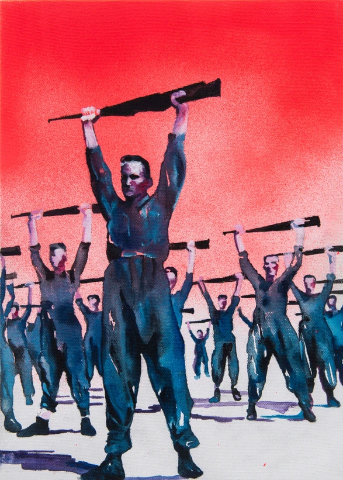
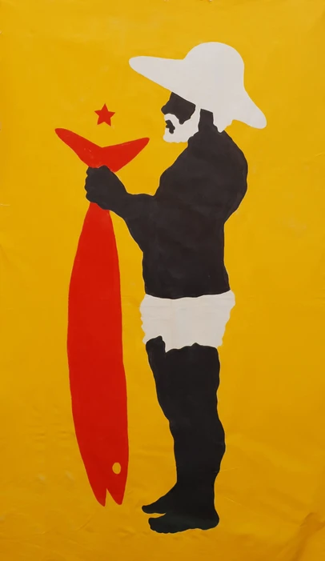

"A vontade de se jogar dentro da bola do sol e esperar ela contar sua história"
Heloisa Hariadne

"Aprendendo a jogar o jogo do bicho"
Heloisa Hariadne

"Com uma gota ja se faz oceano pra sede se matar em mergulho"
Heloisa Hariadne

"Derretendo as muralhas de gelo para seguir as navegações"
Heloisa Hariadne

"O alto ancorado no baixo, o fisico envolvendo o espiritual, o humano no inumano"
Heloisa Hariadne

"Atentos"
Marcela Cantuária

"Check out"
Marcela Cantuária

"Dama de copas"
Marcela Cantuária

"Uma proposta para o reencantamento"
Marcela Cantuária

"É doce morrer no mar"
Marcela Cantuária

"Bandeira mulamba"
Mulambö

"Equilíbrio"
Mulambö

"Saquarema Itaúna"
Mulambö

"Terra estrelada"
Mulambö

"Todos os caminhos"
Mulambö